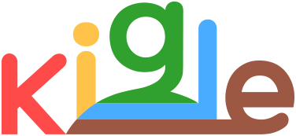
신속한신속한 실행 정확한정확한 디자인
팀 미션
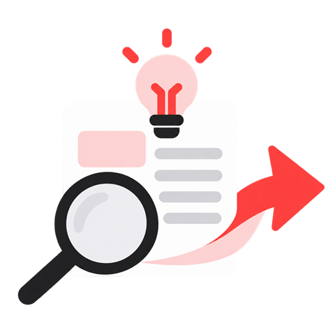
기획의 의도를 먼저 파악하고 충분히 생각합니다
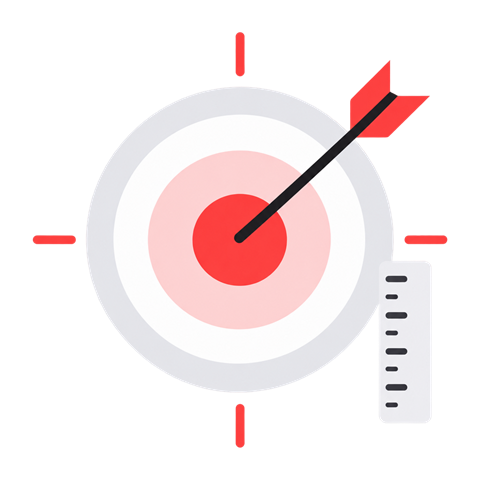
목적에 맞춘 디자인을 합니다
AI로 효율화된 디자인 체계를 생각합니다
주요 업무
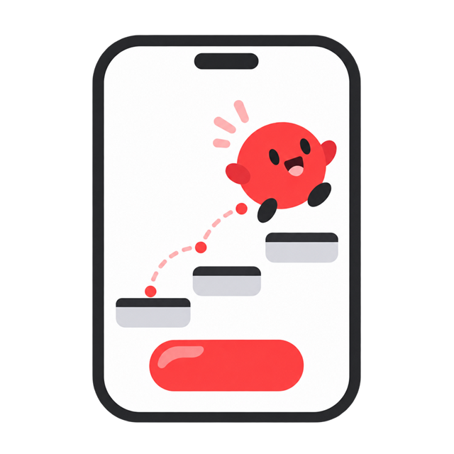
앱 안에 포함되는 모든 요소들을 디자인하고 움직임을 줍니다.
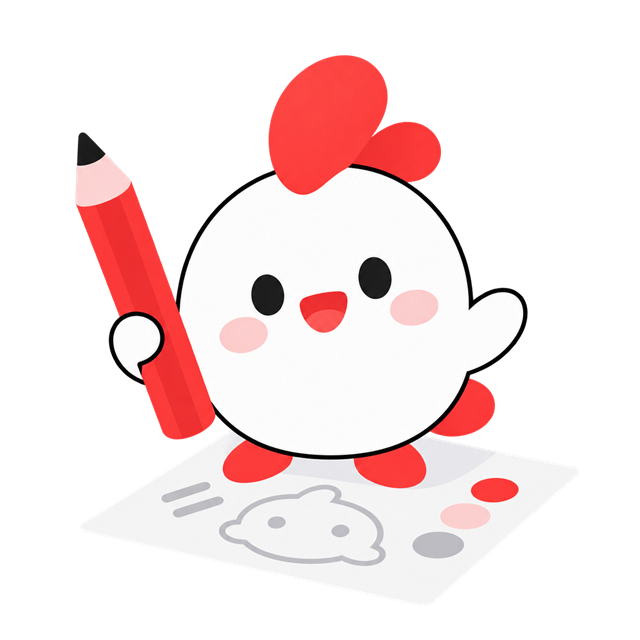
키글의 새로운 IP 캐릭터를 디자인합니다.
앱 광고에 필요한 이미지를 제작합니다.
유튜브 채널에 업로드되는 게임 영상의 썸네일을 제작합니다.
구글 플레이 스토어 / 애플 앱 스토어에 등록시 필요한 이미지를 제작합니다.
팀원 소개
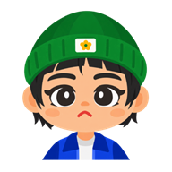
앱디자인 팀장
각지게 살자
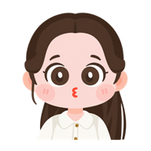
앱디자인
움직여라
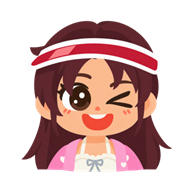
인생은 쫀득하게
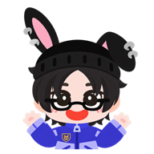
앱디팀의 E담당
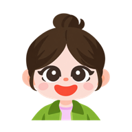
호불호 크게 없는 INFP
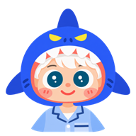
갓생을 꿈꾸는 게으름뱅이
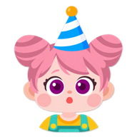
이너피스
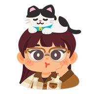
앱디자인+TF
집이 최고다
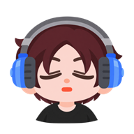
앱디팀 중고신입(?)